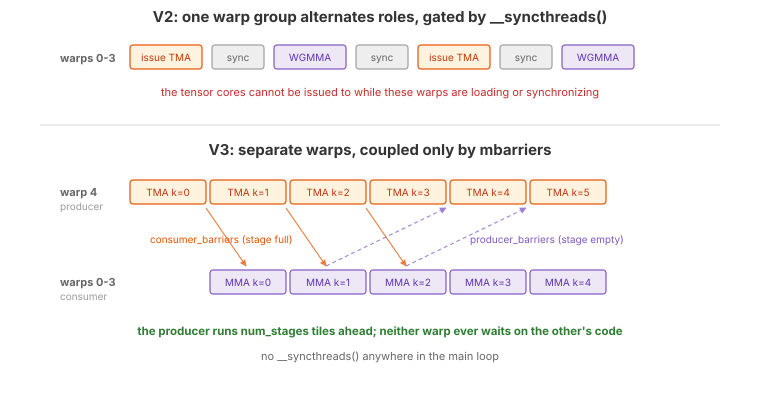
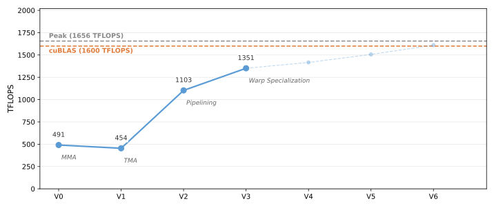

3. Warp Specialization¶
V2 overlaps TMA and WGMMA across iterations, but every warp in the
block does every job. The same 128 threads issue the TMA, wait on its barrier,
run the MMA, and wait for it — with a __syncthreads() at each transition
that forces the whole block into lockstep. The tensor cores cannot run ahead of
the loader, because the warps that would issue the next MMA are sitting in a
block-wide barrier.
This version introduces warp specialization: warps are given different jobs
and run different code. One warp becomes a dedicated producer that does
nothing but issue TMA loads; the remaining four warps become a consumer warp
group that does nothing but run WGMMA. They never meet at a __syncthreads();
instead they hand stages back and forth through a pair of mbarriers.
Triton also performs warp specialization internally, but as a compiler pass with no user-level control. In Tilus you explicitly assign roles to warps and define how they communicate.
The Full Kernel¶
@tilus.autotune("num_stages", [2, 3, 4, 5, 6, 7])
@tilus.autotune(
"block_m, block_n", [[128, 64], [128, 128], [128, 256], [256, 128], [256, 256]]
)
@tilus.autotune("block_k", [16, 32, 64])
class MatmulWGMMAV3(tilus.Script):
def __init__(
self,
num_stages,
block_m,
block_n,
block_k,
):
super().__init__()
self.num_stages = num_stages
self.block_m = block_m
self.block_n = block_n
self.block_k = block_k
def __call__(
self,
m_size: int32,
n_size: int,
k_size: int,
a_ptr: ~float16,
b_ptr: ~float16,
c_ptr: ~float16,
):
self.attrs.blocks = [
cdiv(m_size, self.block_m),
cdiv(n_size, self.block_n),
]
self.attrs.warps = 5
block_m, block_n, block_k = self.block_m, self.block_n, self.block_k
offset_m: int32 = block_m * self.blockIdx.x
offset_n: int32 = block_n * self.blockIdx.y
ga = self.global_view(a_ptr, dtype=float16, shape=[m_size, k_size])
gb = self.global_view(b_ptr, dtype=float16, shape=[n_size, k_size])
sa = self.shared_tensor(dtype=float16, shape=[self.num_stages, block_m, block_k])
sb = self.shared_tensor(dtype=float16, shape=[self.num_stages, block_n, block_k])
acc = self.register_tensor(dtype=float32, shape=[block_m, block_n], init=0.0)
consumer_barriers = self.mbarrier.alloc(
counts=[1 for _ in range(self.num_stages)]
)
producer_barriers = self.mbarrier.alloc(
counts=[128 for _ in range(self.num_stages)]
)
with self.thread_group(thread_begin=128, num_threads=32):
stage: int32 = 0
producer_phases = self.register_tensor(
dtype=uint32, shape=[self.num_stages], init=1
)
for offset_k in self.range(0, k_size, block_k, unroll=self.num_stages):
self.mbarrier.wait(producer_barriers[stage], phase=producer_phases[stage])
producer_phases[stage] ^= 1
with self.single_thread():
self.mbarrier.arrive_and_expect_tx(
consumer_barriers[stage],
transaction_bytes=sa[stage].nbytes + sb[stage].nbytes,
)
self.tma.global_to_shared(
src=ga,
dst=sa[stage],
offsets=[offset_m, offset_k],
mbarrier=consumer_barriers[stage],
)
self.tma.global_to_shared(
src=gb,
dst=sb[stage],
offsets=[offset_n, offset_k],
mbarrier=consumer_barriers[stage],
)
stage = (stage + 1) % self.num_stages
for _ in self.range(min(self.num_stages, cdiv(k_size, self.block_k))):
self.mbarrier.wait(
producer_barriers[stage], phase=producer_phases[stage]
) # wait until the stage is ready to be filled
producer_phases[stage] ^= 1
stage = (stage + 1) % self.num_stages
with self.thread_group(thread_begin=0, num_threads=128):
consumer_phases = self.register_tensor(
dtype=uint32, shape=[self.num_stages], init=0
)
stage: int32 = 0
for offset_k in self.range(0, k_size, block_k, unroll=self.num_stages):
self.mbarrier.wait(consumer_barriers[stage], phase=consumer_phases[stage])
consumer_phases[stage] ^= 1
self.wgmma.fence()
self.wgmma.mma(sa[stage], sb[stage].transpose(), acc)
self.wgmma.commit_group()
self.wgmma.wait_group(0)
self.mbarrier.arrive(producer_barriers[stage])
stage = (stage + 1) % self.num_stages
self.sync()
casted_acc = self.cast(acc, dtype=float16)
gc = self.global_view(c_ptr, dtype=float16, shape=[m_size, n_size])
self.store_global(gc, casted_acc, offsets=[offset_m, offset_n])
What Changed from V2¶
V2 |
V3 |
|
|---|---|---|
Warp structure |
4 warps, all doing everything |
5 warps: 1 TMA producer + 4-warp consumer group |
Barriers |
TMA barrier per stage |
|
Synchronization |
|
None in the loop — only mbarrier handshakes |
Phase tracking |
Per-stage phase array |
Per-role phase array, one per participant |
Prefill |
Explicit prefill loop |
Implicit: the producer runs ahead on its own |
Loops |
|
|
New instructions |
Why a Separate Producer Warp¶
{kind=link}

V2 alternates roles inside one warp group, gated by __syncthreads().
V3 gives the TMA its own warp, so the producer can run several K-tiles ahead
of the consumer.¶
A TMA load is issued by a single thread — the rest of the warp contributes nothing to it. In V2 that thread is part of the same warp group that runs WGMMA, so issuing the next load means the warp group is not issuing MMA, and the block-wide sync means no other warp can cover for it.
Splitting the roles fixes both problems:
TMA warp (threads 128–159): loops over K-tiles issuing loads back-to-back. Before filling a stage, it waits only on
producer_barriers[stage]to confirm the consumer is finished with that slot.Consumer warp group (threads 0–127): loops over K-tiles issuing WGMMA back-to-back. Before each MMA it waits only on
consumer_barriers[stage]to confirm the data has landed.
Neither ever waits for the other’s code — only for a specific stage’s data
dependency. The producer naturally runs num_stages tiles ahead, so the
consumer’s wait is usually already satisfied when it arrives.
Note
warps = 5 is not a typo, and the ordering matters. The consumer group
occupies warps 0–3 because WGMMA requires a warp-group-aligned span of
four consecutive warps; warp 4 is left over for the producer. Putting the
producer first would push the consumer to warps 1–4, which is not a valid
warp group.
Producer-Consumer Barriers¶
V2 used one barrier per stage to signal “TMA has landed”. That is only half the
handshake — it says when a stage becomes full, but nothing about when it
becomes empty again, which V2 got for free from __syncthreads(). Without
the block-wide sync, both directions must be explicit:
consumer_barriers = self.mbarrier.alloc(counts=[1 for _ in range(self.num_stages)])
producer_barriers = self.mbarrier.alloc(counts=[128 for _ in range(self.num_stages)])
consumer_barriers[i]: signaled by the TMA engine’s tx-count when stageihas been filled. The consumer waits on these. Arrival count is 1, since a single thread declares the transaction bytes.producer_barriers[i]: signaled when the consumer has finished reading stagei. The producer waits on these. Arrival count is 128, because every thread of the consumer warp group executesmbarrier.arrive()afterwgmma.wait_group(0).
The initial phases are what make the pipeline start correctly:
producer_phasesstarts at 1. All mbarriers begin at hardware phase 0, so a wait expecting phase 1 does not match and passes immediately. That is exactly right: every stage starts empty, and the producer should begin filling without blocking.consumer_phasesstarts at 0, which does match, so the consumer blocks until the producer’s first load actually completes.
Hint
Tilus exposes these two values as
self.mbarrier.producer_initial_phase and
self.mbarrier.consumer_initial_phase, which V4 uses instead of
hard-coded literals.
Draining the Pipeline¶
The producer’s main loop exits after issuing the last K-tile, but at that moment
up to num_stages loads are still in flight and the consumer is still working
through them. If the producer warp simply exits, its threads leave the block
while the consumer is still arriving on producer_barriers — so V3 adds a
drain loop that consumes the outstanding empty-signals without issuing anything:
for _ in self.range(min(self.num_stages, cdiv(k_size, self.block_k))):
self.mbarrier.wait(
producer_barriers[stage], phase=producer_phases[stage]
) # wait until the stage is ready to be filled
producer_phases[stage] ^= 1
stage = (stage + 1) % self.num_stages
The min(...) handles the short-K case for the same reason as V2’s
max_num_stages: when there are fewer K-tiles than stages, fewer stages were
ever filled, so fewer signals will arrive.
Walkthrough¶
TMA Warp (Producer)¶
with self.thread_group(thread_begin=128, num_threads=32):
stage: int32 = 0
producer_phases = self.register_tensor(
dtype=uint32, shape=[self.num_stages], init=1
)
for offset_k in self.range(0, k_size, block_k, unroll=self.num_stages):
self.mbarrier.wait(producer_barriers[stage], phase=producer_phases[stage])
producer_phases[stage] ^= 1
with self.single_thread():
self.mbarrier.arrive_and_expect_tx(
consumer_barriers[stage],
transaction_bytes=sa[stage].nbytes + sb[stage].nbytes,
)
self.tma.global_to_shared(
src=ga,
dst=sa[stage],
offsets=[offset_m, offset_k],
mbarrier=consumer_barriers[stage],
)
self.tma.global_to_shared(
src=gb,
dst=sb[stage],
offsets=[offset_n, offset_k],
mbarrier=consumer_barriers[stage],
)
stage = (stage + 1) % self.num_stages
for _ in self.range(min(self.num_stages, cdiv(k_size, self.block_k))):
self.mbarrier.wait(
producer_barriers[stage], phase=producer_phases[stage]
) # wait until the stage is ready to be filled
producer_phases[stage] ^= 1
stage = (stage + 1) % self.num_stages
Each iteration:
mbarrier.wait()onproducer_barriers[stage]blocks until the consumer has released this stage, then the local phase for that stage flips.Inside
single_thread(),mbarrier.arrive_and_expect_tx()declares the bytes for both tiles onconsumer_barriers[stage].Two
tma.global_to_shared()calls load A and B intosa[stage]/sb[stage]. In V3 these sit inside the samesingle_threadblock as the declaration — the simplest thing that works. V4 moves them out to warp scope, which is the form the later versions use.The stage index advances modulo
num_stages.
Note there is no explicit prefill loop as in V2. The producer simply starts
running, and because producer_phases starts at 1, its first
num_stages waits all pass immediately.
Consumer Warp Group¶
with self.thread_group(thread_begin=0, num_threads=128):
consumer_phases = self.register_tensor(
dtype=uint32, shape=[self.num_stages], init=0
)
stage: int32 = 0
for offset_k in self.range(0, k_size, block_k, unroll=self.num_stages):
self.mbarrier.wait(consumer_barriers[stage], phase=consumer_phases[stage])
consumer_phases[stage] ^= 1
self.wgmma.fence()
self.wgmma.mma(sa[stage], sb[stage].transpose(), acc)
self.wgmma.commit_group()
self.wgmma.wait_group(0)
self.mbarrier.arrive(producer_barriers[stage])
stage = (stage + 1) % self.num_stages
self.sync()
casted_acc = self.cast(acc, dtype=float16)
gc = self.global_view(c_ptr, dtype=float16, shape=[m_size, n_size])
self.store_global(gc, casted_acc, offsets=[offset_m, offset_n])
The consumer runs the matching loop:
mbarrier.wait()onconsumer_barriers[stage]blocks until the TMA data has arrived.The WGMMA sequence computes on
sa[stage]andsb[stage].mbarrier.arrive()onproducer_barriers[stage]releases the stage. It comes afterwgmma.wait_group(0), which is what makes the release safe: the tensor cores have finished reading shared memory, so the producer may overwrite it.The epilogue runs entirely within the consumer group, which is convenient — the accumulator lives in these 128 threads’ registers, so no data movement is needed to reach the
store_global.
Performance¶
Warp specialization lifts the kernel to 575 TFLOPS (1.91 ms), 11% ahead of V2
and 6% ahead of V1. The autotuner chooses the same configuration as V2 — 2
stages, 128 x 128, block_k=64 — so the entire gain comes from the
restructuring: removing the block-wide syncs, unrolling the ring buffer so stage
indices become constants, and letting the producer run ahead on its own warp.
Tensor pipe utilization rises to 75%, and DRAM throughput settles at 61%.
This is also where V2’s investment finally pays off. Pipelining and warp specialization are complementary: the ring buffer provides the slots, and warp specialization provides the independent execution needed to fill them. The complete source is at examples/hopper_matmul/matmul_v3.py.

Hopper matmul performance on H100 SXM (M=N=K=8192, fp16). Latency is CUDA-event timed, median of three fresh processes. Peak is the published dense FP16 tensor core throughput of the H100 SXM.¶
What’s Next¶
V3 achieves true overlap between TMA and WGMMA. The remaining bottleneck is on
the compute side: there is exactly one consumer warp group, and it issues one
MMA and immediately waits for it. Between the wait_group(0) and the next
mbarrier.wait, the tensor core pipeline has nothing queued and drains.
Feeding it faster is not a matter of loading faster — it needs more
independent MMA work available at any instant.
In the next version, we split the output tile across two consumer
warp groups, each owning half the rows of C, so two independent WGMMA streams
share the same loaded B tile. We also refactor the barrier bookkeeping into a
reusable Pipeline class, since the number of barriers, phases, and stage
counters is about to grow.